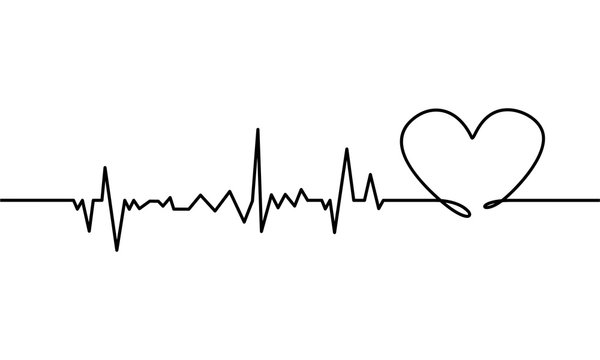

プロジェクト演習「フーリエ信号処理」マニュアル
- Fourier.zipのアーカイブファイルを適当な場所に展開する。
$ unzip Fourier.zip
Archive: Fourier.zip
creating: Fourier/
inflating: Fourier/FFT_Cooley_Tukey.pdf
inflating: Fourier/utility.jar
inflating: Fourier/.DS_Store
inflating: __MACOSX/Fourier/._.DS_Store
inflating: Fourier/build.xml
creating: Fourier/Classes/
inflating: Fourier/Makefile
creating: Fourier/fourier/
inflating: Fourier/pane.jar
creating: Fourier/SampleImages/
creating: Fourier/ResultImages/
inflating: Fourier/mvc.jar
creating: Fourier/fourier.app/
inflating: Fourier/ReadMe.txt
inflating: Fourier/fourier.jar
inflating: __MACOSX/Fourier/._fourier.jar
inflating: Fourier/fourier.mf
creating: Fourier/Classes/fourier/
inflating: Fourier/fourier/Example2d.java
inflating: Fourier/fourier/DiscreteFourierTransformation.java
inflating: Fourier/fourier/Example1d.java
inflating: Fourier/fourier/FourierModel.java
inflating: Fourier/fourier/Fourier1dModel.java
inflating: Fourier/fourier/ContinuousFourierTransformation.java
inflating: Fourier/fourier/Example.java
inflating: Fourier/fourier/Fourier2dModel.java
inflating: Fourier/fourier/FourierPaneModel.java
inflating: Fourier/fourier/FourierPaneView.java
inflating: Fourier/fourier/DiscreteFourier2dTransformation.java
inflating: Fourier/fourier/FourierPaneController.java
inflating: Fourier/fourier/DiscreteFourier1dTransformation.java
inflating: Fourier/fourier/FourierTransformation.java
inflating: Fourier/SampleImages/Fourier01.jpg
inflating: Fourier/SampleImages/Fourier15.jpg
inflating: Fourier/SampleImages/Fourier29.jpg
inflating: Fourier/SampleImages/Fourier28.jpg
inflating: Fourier/SampleImages/Fourier14.jpg
inflating: Fourier/SampleImages/Fourier00.jpg
inflating: Fourier/SampleImages/Fourier16.jpg
inflating: Fourier/SampleImages/Fourier02.jpg
inflating: Fourier/SampleImages/Fourier03.jpg
inflating: Fourier/SampleImages/Fourier17.jpg
inflating: Fourier/SampleImages/Fourier13.jpg
inflating: Fourier/SampleImages/Fourier07.jpg
inflating: Fourier/SampleImages/Fourier06.jpg
inflating: Fourier/SampleImages/Fourier12.jpg
inflating: Fourier/SampleImages/Fourier04.jpg
inflating: Fourier/SampleImages/Fourier10.jpg
inflating: Fourier/SampleImages/SoundWave.jpg
inflating: Fourier/SampleImages/Fourier11.jpg
inflating: Fourier/SampleImages/Fourier05.jpg
inflating: Fourier/SampleImages/Fourier62.jpg
inflating: Fourier/SampleImages/StockPrice.jpg
inflating: Fourier/SampleImages/Fourier63.jpg
inflating: Fourier/SampleImages/Fourier61.jpg
inflating: Fourier/SampleImages/Fourier60.jpg
inflating: Fourier/SampleImages/Fourier70.jpg
inflating: Fourier/SampleImages/Fourier71.jpg
inflating: Fourier/SampleImages/Fourier73.jpg
inflating: Fourier/SampleImages/Fourier72.jpg
inflating: Fourier/SampleImages/Fourier80.jpg
inflating: Fourier/SampleImages/Fourier57.jpg
inflating: Fourier/SampleImages/JosephFourier5.jpg
inflating: Fourier/SampleImages/Electrocardiogram.jpg
inflating: Fourier/SampleImages/JosephFourier4.jpg
inflating: Fourier/SampleImages/Fourier56.jpg
inflating: Fourier/SampleImages/Fourier81.jpg
inflating: Fourier/SampleImages/Fourier83.jpg
inflating: Fourier/SampleImages/Fourier54.jpg
inflating: Fourier/SampleImages/JosephFourier6.jpg
inflating: Fourier/SampleImages/JosephFourier7.jpg
inflating: Fourier/SampleImages/Fourier55.jpg
inflating: Fourier/SampleImages/Fourier82.jpg
inflating: Fourier/SampleImages/Fourier92.jpg
inflating: Fourier/SampleImages/Fourier51.jpg
inflating: Fourier/SampleImages/JosephFourier3.jpg
inflating: Fourier/SampleImages/JosephFourier2.jpg
inflating: Fourier/SampleImages/Fourier50.jpg
inflating: Fourier/SampleImages/Fourier93.jpg
inflating: Fourier/SampleImages/Fourier91.jpg
inflating: Fourier/SampleImages/Fourier52.jpg
inflating: Fourier/SampleImages/JosephFourier1.jpg
inflating: Fourier/SampleImages/Fourier53.jpg
inflating: Fourier/SampleImages/Fourier90.jpg
inflating: Fourier/SampleImages/FourierApp2.jpg
inflating: Fourier/SampleImages/Fourier20.jpg
inflating: Fourier/SampleImages/Fourier08.jpg
inflating: Fourier/SampleImages/Fourier09.jpg
inflating: Fourier/SampleImages/Fourier21.jpg
inflating: Fourier/SampleImages/FourierApp3.jpg
inflating: Fourier/SampleImages/FourierApp1.jpg
inflating: Fourier/SampleImages/Fourier23.jpg
inflating: Fourier/SampleImages/SourceDataAll.jpg
inflating: Fourier/SampleImages/Fourier22.jpg
inflating: Fourier/SampleImages/FourierApp4.jpg
inflating: Fourier/SampleImages/Fourier32.jpg
inflating: Fourier/SampleImages/Fourier26.jpg
inflating: Fourier/SampleImages/Fourier27.jpg
inflating: Fourier/SampleImages/Fourier33.jpg
inflating: Fourier/SampleImages/Fourier19.jpg
inflating: Fourier/SampleImages/Fourier25.jpg
inflating: Fourier/SampleImages/Fourier31.jpg
inflating: Fourier/SampleImages/SampleSignals.jpg
inflating: Fourier/SampleImages/Fourier30.jpg
inflating: Fourier/SampleImages/Fourier24.jpg
inflating: Fourier/SampleImages/Fourier18.jpg
inflating: Fourier/ResultImages/Fourier01.jpg
inflating: Fourier/ResultImages/Fourier15.jpg
inflating: Fourier/ResultImages/Fourier14.jpg
inflating: Fourier/ResultImages/Fourier00.jpg
inflating: Fourier/ResultImages/Fourier16.jpg
inflating: Fourier/ResultImages/Fourier02.jpg
inflating: Fourier/ResultImages/Fourier03.jpg
inflating: Fourier/ResultImages/Fourier17.jpg
inflating: Fourier/ResultImages/Fourier13.jpg
inflating: Fourier/ResultImages/Fourier07.jpg
inflating: Fourier/ResultImages/Fourier06.jpg
inflating: Fourier/ResultImages/Fourier12.jpg
inflating: Fourier/ResultImages/Fourier04.jpg
inflating: Fourier/ResultImages/Fourier10.jpg
inflating: Fourier/ResultImages/Fourier11.jpg
inflating: Fourier/ResultImages/Fourier05.jpg
inflating: Fourier/ResultImages/Fourier57.jpg
inflating: Fourier/ResultImages/Fourier56.jpg
inflating: Fourier/ResultImages/Fourier54.jpg
inflating: Fourier/ResultImages/Fourier55.jpg
inflating: Fourier/ResultImages/Fourier51.jpg
inflating: Fourier/ResultImages/Fourier50.jpg
inflating: Fourier/ResultImages/Fourier52.jpg
inflating: Fourier/ResultImages/Fourier53.jpg
inflating: Fourier/ResultImages/Fourier20.jpg
inflating: Fourier/ResultImages/Fourier08.jpg
inflating: Fourier/ResultImages/Fourier09.jpg
inflating: Fourier/ResultImages/Fourier21.jpg
inflating: Fourier/ResultImages/Fourier23.jpg
inflating: Fourier/ResultImages/Fourier22.jpg
inflating: Fourier/ResultImages/Fourier19.jpg
inflating: Fourier/ResultImages/Fourier18.jpg
creating: Fourier/fourier.app/Contents/
inflating: Fourier/Classes/fourier/Fourier2dModel.class
inflating: Fourier/Classes/fourier/ContinuousFourierTransformation.class
inflating: Fourier/Classes/fourier/FourierPaneController.class
inflating: Fourier/Classes/fourier/DiscreteFourierTransformation.class
inflating: Fourier/Classes/fourier/Example.class
inflating: Fourier/Classes/fourier/Example2d.class
inflating: Fourier/Classes/fourier/FourierPaneModel.class
inflating: Fourier/Classes/fourier/FourierPaneView.class
inflating: Fourier/Classes/fourier/Fourier1dModel.class
inflating: Fourier/Classes/fourier/DiscreteFourier1dTransformation.class
inflating: Fourier/Classes/fourier/DiscreteFourier2dTransformation.class
inflating: Fourier/Classes/fourier/MethodAction.class
inflating: Fourier/Classes/fourier/FourierTransformation.class
inflating: Fourier/Classes/fourier/FourierModel.class
inflating: Fourier/Classes/fourier/Example1d.class
inflating: Fourier/Classes/fourier/Method2dAction.class
creating: Fourier/fourier.app/Contents/MacOS/
inflating: __MACOSX/Fourier/fourier.app/Contents/._MacOS
creating: Fourier/fourier.app/Contents/Resources/
inflating: Fourier/fourier.app/Contents/Info.plist
inflating: __MACOSX/Fourier/fourier.app/Contents/._Info.plist
inflating: Fourier/fourier.app/Contents/MacOS/launcher
inflating: __MACOSX/Fourier/fourier.app/Contents/MacOS/._launcher
inflating: Fourier/fourier.app/Contents/MacOS/fourier.jar
inflating: __MACOSX/Fourier/fourier.app/Contents/MacOS/._fourier.jar
creating: Fourier/fourier.app/Contents/Resources/Java/
creating: Fourier/fourier.app/Contents/Resources/Java/SampleImages/
inflating: Fourier/fourier.app/Contents/Resources/Java/fourier.jar
inflating: Fourier/fourier.app/Contents/Resources/Java/SampleImages/Fourier01.jpg
inflating: Fourier/fourier.app/Contents/Resources/Java/SampleImages/Fourier15.jpg
inflating: Fourier/fourier.app/Contents/Resources/Java/SampleImages/Fourier29.jpg
inflating: Fourier/fourier.app/Contents/Resources/Java/SampleImages/Fourier28.jpg
inflating: Fourier/fourier.app/Contents/Resources/Java/SampleImages/Fourier14.jpg
inflating: Fourier/fourier.app/Contents/Resources/Java/SampleImages/Fourier00.jpg
inflating: Fourier/fourier.app/Contents/Resources/Java/SampleImages/Fourier16.jpg
inflating: Fourier/fourier.app/Contents/Resources/Java/SampleImages/Fourier02.jpg
inflating: Fourier/fourier.app/Contents/Resources/Java/SampleImages/Fourier03.jpg
inflating: Fourier/fourier.app/Contents/Resources/Java/SampleImages/Fourier17.jpg
inflating: Fourier/fourier.app/Contents/Resources/Java/SampleImages/Fourier13.jpg
inflating: Fourier/fourier.app/Contents/Resources/Java/SampleImages/Fourier07.jpg
inflating: Fourier/fourier.app/Contents/Resources/Java/SampleImages/Fourier06.jpg
inflating: Fourier/fourier.app/Contents/Resources/Java/SampleImages/Fourier12.jpg
inflating: Fourier/fourier.app/Contents/Resources/Java/SampleImages/Fourier04.jpg
inflating: Fourier/fourier.app/Contents/Resources/Java/SampleImages/Fourier10.jpg
inflating: Fourier/fourier.app/Contents/Resources/Java/SampleImages/SoundWave.jpg
inflating: Fourier/fourier.app/Contents/Resources/Java/SampleImages/Fourier11.jpg
inflating: Fourier/fourier.app/Contents/Resources/Java/SampleImages/Fourier05.jpg
inflating: Fourier/fourier.app/Contents/Resources/Java/SampleImages/Fourier62.jpg
inflating: Fourier/fourier.app/Contents/Resources/Java/SampleImages/StockPrice.jpg
inflating: Fourier/fourier.app/Contents/Resources/Java/SampleImages/Fourier63.jpg
inflating: Fourier/fourier.app/Contents/Resources/Java/SampleImages/Fourier61.jpg
inflating: Fourier/fourier.app/Contents/Resources/Java/SampleImages/Fourier60.jpg
inflating: Fourier/fourier.app/Contents/Resources/Java/SampleImages/Fourier70.jpg
inflating: Fourier/fourier.app/Contents/Resources/Java/SampleImages/Fourier71.jpg
inflating: Fourier/fourier.app/Contents/Resources/Java/SampleImages/Fourier73.jpg
inflating: Fourier/fourier.app/Contents/Resources/Java/SampleImages/Fourier72.jpg
inflating: Fourier/fourier.app/Contents/Resources/Java/SampleImages/Fourier80.jpg
inflating: Fourier/fourier.app/Contents/Resources/Java/SampleImages/Fourier57.jpg
inflating: Fourier/fourier.app/Contents/Resources/Java/SampleImages/JosephFourier5.jpg
inflating: Fourier/fourier.app/Contents/Resources/Java/SampleImages/Electrocardiogram.jpg
inflating: Fourier/fourier.app/Contents/Resources/Java/SampleImages/JosephFourier4.jpg
inflating: Fourier/fourier.app/Contents/Resources/Java/SampleImages/Fourier56.jpg
inflating: Fourier/fourier.app/Contents/Resources/Java/SampleImages/Fourier81.jpg
inflating: Fourier/fourier.app/Contents/Resources/Java/SampleImages/Fourier83.jpg
inflating: Fourier/fourier.app/Contents/Resources/Java/SampleImages/Fourier54.jpg
inflating: Fourier/fourier.app/Contents/Resources/Java/SampleImages/JosephFourier6.jpg
inflating: Fourier/fourier.app/Contents/Resources/Java/SampleImages/JosephFourier7.jpg
inflating: Fourier/fourier.app/Contents/Resources/Java/SampleImages/Fourier55.jpg
inflating: Fourier/fourier.app/Contents/Resources/Java/SampleImages/Fourier82.jpg
inflating: Fourier/fourier.app/Contents/Resources/Java/SampleImages/Fourier92.jpg
inflating: Fourier/fourier.app/Contents/Resources/Java/SampleImages/Fourier51.jpg
inflating: Fourier/fourier.app/Contents/Resources/Java/SampleImages/JosephFourier3.jpg
inflating: Fourier/fourier.app/Contents/Resources/Java/SampleImages/JosephFourier2.jpg
inflating: Fourier/fourier.app/Contents/Resources/Java/SampleImages/Fourier50.jpg
inflating: Fourier/fourier.app/Contents/Resources/Java/SampleImages/Fourier93.jpg
inflating: Fourier/fourier.app/Contents/Resources/Java/SampleImages/Fourier91.jpg
inflating: Fourier/fourier.app/Contents/Resources/Java/SampleImages/Fourier52.jpg
inflating: Fourier/fourier.app/Contents/Resources/Java/SampleImages/JosephFourier1.jpg
inflating: Fourier/fourier.app/Contents/Resources/Java/SampleImages/Fourier53.jpg
inflating: Fourier/fourier.app/Contents/Resources/Java/SampleImages/Fourier90.jpg
inflating: Fourier/fourier.app/Contents/Resources/Java/SampleImages/FourierApp2.jpg
inflating: Fourier/fourier.app/Contents/Resources/Java/SampleImages/Fourier20.jpg
inflating: Fourier/fourier.app/Contents/Resources/Java/SampleImages/Fourier08.jpg
inflating: Fourier/fourier.app/Contents/Resources/Java/SampleImages/Fourier09.jpg
inflating: Fourier/fourier.app/Contents/Resources/Java/SampleImages/Fourier21.jpg
inflating: Fourier/fourier.app/Contents/Resources/Java/SampleImages/FourierApp3.jpg
inflating: Fourier/fourier.app/Contents/Resources/Java/SampleImages/FourierApp1.jpg
inflating: Fourier/fourier.app/Contents/Resources/Java/SampleImages/Fourier23.jpg
inflating: Fourier/fourier.app/Contents/Resources/Java/SampleImages/SourceDataAll.jpg
inflating: Fourier/fourier.app/Contents/Resources/Java/SampleImages/Fourier22.jpg
inflating: Fourier/fourier.app/Contents/Resources/Java/SampleImages/FourierApp4.jpg
inflating: Fourier/fourier.app/Contents/Resources/Java/SampleImages/Fourier32.jpg
inflating: Fourier/fourier.app/Contents/Resources/Java/SampleImages/Fourier26.jpg
inflating: Fourier/fourier.app/Contents/Resources/Java/SampleImages/Fourier27.jpg
inflating: Fourier/fourier.app/Contents/Resources/Java/SampleImages/Fourier33.jpg
inflating: Fourier/fourier.app/Contents/Resources/Java/SampleImages/Fourier19.jpg
inflating: Fourier/fourier.app/Contents/Resources/Java/SampleImages/Fourier25.jpg
inflating: Fourier/fourier.app/Contents/Resources/Java/SampleImages/Fourier31.jpg
inflating: Fourier/fourier.app/Contents/Resources/Java/SampleImages/SampleSignals.jpg
inflating: Fourier/fourier.app/Contents/Resources/Java/SampleImages/Fourier30.jpg
inflating: Fourier/fourier.app/Contents/Resources/Java/SampleImages/Fourier24.jpg
inflating: Fourier/fourier.app/Contents/Resources/Java/SampleImages/Fourier18.jpg
- 展開して得られるFourierというディレクトリへ移る。
$ cd Fourier
- 中身を確認する。
$ ls *
Mkakefile build.xml mvc.jar pane.jar utility.jar fourier.mf
fourier.app
Classses
fourier
SampleImages FFT_Cooley_Tukey ReadMe.txt ResultLmages
- makeする。
$ make
prepare:
[exec] 2023年 7月21日 金曜日 17時31分23秒 JST
compile:
[exec] 2023年 7月21日 金曜日 17時31分23秒 JST
jar:
[jar] Building jar: /Users/omoriyutaro/Desktop/Fourier/fourier.jar
[exec] 2023年 7月21日 金曜日 17時31分24秒 JST
all:
[exec] 2023年 7月21日 金曜日 17時31分24秒 JST
BUILD SUCCESSFUL
Total time: 1 second
- fourier.jarが生成されていることを確かめる。
Mkakefile build.xml mvc.jar pane.jar fourier.jar utility.jar fourier.mf
fourier.app
Classses
fourier
SampleImages FFT_Cooley_Tukey ReadMe.txt ResultLmages
- 生成したfourier.jarをアプリケーション（Fourier.app）の中にインストールする。
$ make install
prepare:
[exec] 2023年 7月21日 金曜日 18時06分30秒 JST
compile:
[exec] 2023年 7月21日 金曜日 18時06分30秒 JST
jar:
[exec] 2023年 7月21日 金曜日 18時06分30秒 JST
all:
[exec] 2023年 7月21日 金曜日 18時06分30秒 JST
install:
[copy] Copying 1 file to /Users/omoriyutaro/Desktop/Fourier/fourier.app/Contents/Resources/Java
[exec] chmod: ./fourier.app/Contents/Resources/Java/../../MacOS/applet: No such file or directory
[exec] Result: 1
[copy] Copying 74 files to /Users/omoriyutaro/Desktop/Fourier/fourier.app/Contents/Resources/Java/SampleImages
[exec] 2023年 7月21日 金曜日 18時06分31秒 JST
BUILD SUCCESSFUL
Total time: 1 second
実行するためのコマンドは以下の通りである。
java -jar fourier.jar
Mac OS Xの場合には、アプリケーションfourier.appをダブルクリックするほうが簡便である。
fourier.app
また、openコマンドでfourier.appを開いても実行可能である。
open fourier.app
以下に実行例を示す。
Copyright 2023 Project Moonlight Vigil, Updated: 2023/07/24 (Created: 2023/07/20)
{kind=link}
{kind=link}
{kind=link}